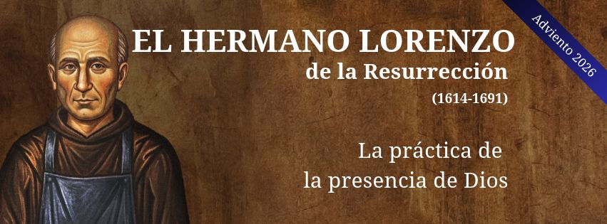

Retiro online de los Carmelitas Descalzos OCD
Un tiempo de reflexión, oración y renovación
Inscripción
Reciba gratuitamente las meditaciones semanales de los Carmelitas Descalzos
Política de privacidad
Utilizamos Mailchimp como nuestra plataforma de marketing. Al hacer clic en el botón «Suscribirse», aceptas que tus datos se transfieran a Mailchimp para su tratamiento.
Aquí puedes obtener más información sobre la política de protección de datos de Mailchimp.Esercizi spirituali in corso

Adviento 2026 con el Hermano Lorenzo de la Resurrección
Figura discreta del Carmelo, el hermano Lorenzo de la Resurrección fue uno de los grandes maestros de la vida espiritual del siglo XVII. Su enseñanza, recientemente puesta de relieve por el Papa León XIV, conserva una sorprendente actualidad.
Este humilde hermano lego nos enseña a vivir en la presencia de Dios en medio de nuestra vida cotidiana. Su enseñanza se inscribe en la gran tradición cristiana que responde a la llamada de Jesús a «orar siempre» (Lc 18,1) y a la exhortación de San Pablo: «Orad sin cesar» (1 Tes 5,17). Para el hermano Lorenzo, el camino es sencillo: permanecer en la presencia de Dios en cada instante, sean cuales sean nuestras ocupaciones.
Durante este tiempo de Adviento, os proponemos descubrir esta escuela de la presencia de Dios, para crecer en una relación más sencilla, más confiada y íntima con el Señor.
Contenido
Cada viernes en tu bandeja de entrada:
Un breve vídeo de nuestros frailes carmelitas sobre el tema de la semana
Sugerencias prácticas para enriquecer tu oración
Un calendario con propuestas de oración para cada día
Retiros anteriores
Retiros anteriores seleccionados
Figuras del Carmelo
Santos e iconos espirituales de los Carmelitas Descalzos
Preguntas frecuentes
Preguntas más habituales
¿Qué es un retiro en línea?
El retiro en línea está diseñado para ayudar a profundizar nuestra relación espiritual con Jesús a la luz de los Evangelios. Con este fin, cada semana de Adviento y de Cuaresma se enviarán reflexiones por correo electrónico.
¿Con qué frecuencia recibiré mensajes?
Recibirás un correo de bienvenida y, a continuación, correos semanales durante el Adviento y la Cuaresma.
¿La participación tiene algún coste?
La inscripción es gratuita. Las donaciones son bienvenidas para apoyar nuestro trabajo.
No he recibido ningún correo, ¿qué debo hacer?
Por favor, revisa tu carpeta de spam. Si te falta algún material, también puedes consultar el archivo en este sitio web.
¡Invita a tus amigos y conocidos a que se unan!
Puede reenviarles esta página o remitirlos a la página web: retiro-online.karmel.at
Los Ejercicios han sido preparados por los Carmelitas de la Provincia de París y traducidos al español por Mará José Poveda Ruíz OCDS. Los Carmelitas austriacos se encargan del envío a los miles de suscriptores en 18 idiomas.
Materiales